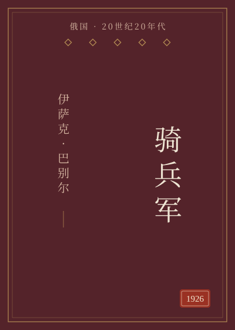

骑兵军
一、基本信息
| 作者 | 伊萨克·巴别尔 |
|---|---|
| 成书/出版 | 1926年（Britannica B402：Konarmiya——first published 1926，revised 1931，enlarged 1933） Isaac Babel — Encyclopaedia Britannica（百科全书） |
| 国别/地区 | 俄国 |
| 时代 | 近代 · 20世纪20年代 |
| 体裁 | 短篇集（骑兵军日记） |
| 语言 | 俄语 |
《骑兵军》冲突结构图（主题·结构图）
二、创作背景
Britannica（B402）：'probes the clash between revolutionary ideals and brutal violence'（探究革命理想与残酷暴力的冲突）。
Britannica（B402）：1920春以 Kiril Lyutov 笔名加入布琼尼第一骑兵军（YugROSTA 记者）；叙述者 Lyutov——'ostensibly autobiographical'。
Britannica（B402）：布琼尼1924/1928公开抨击——开篇'Crossing the Zbruch'、结篇'Rebbe's Son'。
三、内容脉络
（通说待核——B402未载篇目细节）'渡过兹布鲁奇河'的战地日记式短篇。
（通说待核）犹太城镇与哥萨克骑兵的相撞。
四、主要人物表
| 人物 | 身份 | 说明 |
|---|---|---|
| 柳托夫 | 记者/叙述者 | （B402：Lyutov——'ostensibly autobiographical'） |
| 布琼尼 | 骑兵军军长 | （B402：Semyon Budenny——1924/1928抨击） |
五、主题与艺术特点
- '革命理想与残酷暴力的冲突'（B402）。
- '表面上自传'的叙述者（B402：ostensibly autobiographical）。
- 犹太'经师'与哥萨克'刀'（通说待核）。
六、影响与评论
- Britannica：'aphoristic precision...metaphoric extravagance'（B402）。
Isaac Babel — Encyclopaedia Britannica（百科全书） - Britannica：影响 Philip Roth/Grace Paley（B402）。
Isaac Babel — Encyclopaedia Britannica（百科全书）
七、阅读建议
难点
- 日记体的短篇连缀。
- 苏波战争史（1919-20——B402）。
- 《骑兵军》中译本（人民文学/浙江文艺等——通说待核）。
- 俄文原版。
巴别尔首选；与《敖德萨故事》对读。
八、待核实
- 篇目（《渡过兹布鲁奇河》/《拉比之子》——B402已载首末篇）核对。
- 1926年出版细节待核。
- 布琼尼抨击细节待核（B402口径）。